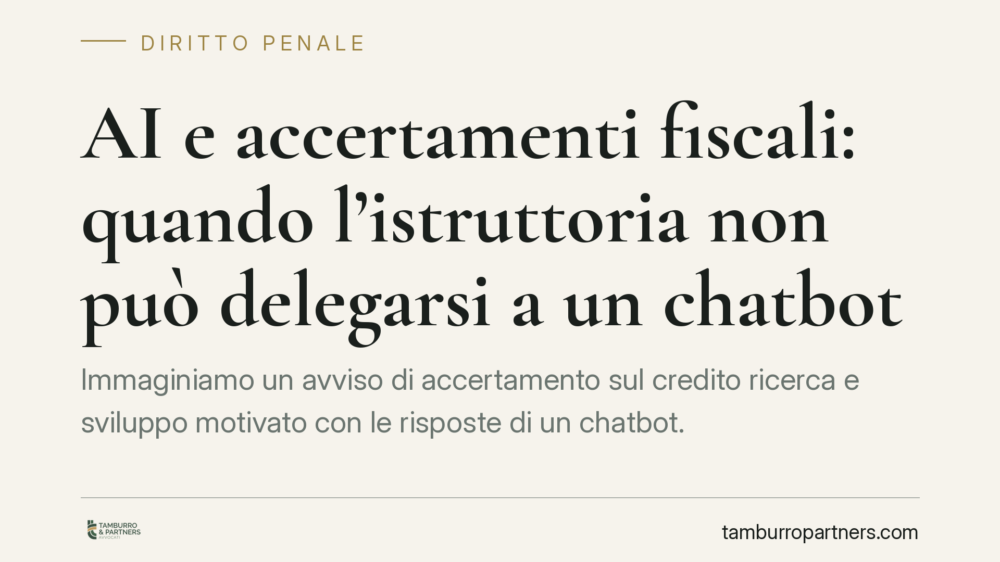

AI e accertamenti fiscali: quando l'istruttoria non può delegarsi a un chatbot
Immaginiamo un avviso di accertamento sul credito ricerca e sviluppo motivato con le risposte di un chatbot. È uno scenario non più teorico, data la diffusione di strumenti di intelligenza artificiale generativa negli uffici. Un output probabilistico può sostenere la pretesa fiscale? La risposta tocca motivazione dell'atto, prova dei fatti e possibili riflessi penali.

Il problema: supporto o sostituzione dell'istruttoria
Gli strumenti di intelligenza artificiale generativa stanno entrando nell'attività amministrativa, compresa quella di controllo fiscale. La domanda giuridica è netta: un avviso di accertamento può fondarsi su quanto "risponde" un chatbot?
Per rispondere occorre capire come funziona un modello linguistico. Non consulta una banca dati di norme e precedenti verificati per restituire la risposta corretta. Genera testo su base probabilistica, prevedendo la sequenza di parole più plausibile rispetto alla richiesta. Da qui il fenomeno noto come allucinazione: il modello produce affermazioni formalmente coerenti ma false, comprese citazioni di norme o sentenze inesistenti.
Un output del genere non è una fonte di prova né un accertamento di fatto. È, nella migliore delle ipotesi, uno spunto da verificare. La responsabilità dell'istruttoria rimane in capo a chi firma l'atto.
Inquadramento normativo: motivazione e prova
Due piani vanno tenuti distinti.
Il primo è la motivazione dell'avviso di accertamento. L'art. 42 del D.P.R. 600/1973 disciplina la sottoscrizione dell'atto e impone che esso indichi i presupposti di fatto e le ragioni giuridiche su cui si fonda la pretesa. Non introduce un obbligo di "indicazione analitica degli elementi probatori", ma richiede che l'iter logico sia ricostruibile. Lo Statuto del contribuente, dopo la riforma del D.Lgs. 219/2023, rafforza questo quadro: l'art. 7 della L. 212/2000 detta i requisiti di motivazione degli atti tributari e il nuovo art. 7-bis precisa l'obbligo motivazionale. Una motivazione che si limiti a riportare l'output di un chatbot, senza esplicitare i fatti e le ragioni autonomamente verificati dall'ufficio, è una motivazione apparente.
Il secondo piano è quello probatorio. L'onere di provare i fatti costitutivi della pretesa grava sull'Amministrazione. Il contenuto generato da un modello linguistico non ha valore di prova: non documenta operazioni, non certifica dati contabili, non sostituisce l'esame della documentazione aziendale. Un accertamento sorretto solo da tali risposte presenta, prima ancora che un vizio di motivazione, un difetto istruttorio: manca l'accertamento reale dei fatti.
Implicazioni pratiche per il contribuente
La distinzione tra i due vizi non è accademica. Se l'atto è annullato per motivazione apparente, si contesta la forma dell'esposizione; se è annullato per carenza istruttoria o probatoria, si contesta che il fatto non è stato dimostrato. In sede di ricorso conviene sollevare entrambi i profili, perché la ratio dell'eventuale annullamento può attestarsi sull'uno o sull'altro piano.
Per le imprese destinatarie di contestazioni su crediti d'imposta – come quello per ricerca e sviluppo – il punto è concreto: la pretesa va saggiata verificando se l'ufficio abbia effettivamente esaminato progetti, costi e documentazione tecnica, o se si sia limitato a valutazioni generiche.
Il profilo penale: autonomia del giudizio
Le contestazioni sui crediti d'imposta possono assumere rilievo penale. Vengono in considerazione, tra gli altri, l'art. 2 del D.Lgs. 74/2000 (dichiarazione fraudolenta mediante uso di fatture o altri documenti per operazioni inesistenti) e l'art. 10-quater (indebita compensazione di crediti non spettanti o inesistenti).
Qui opera il principio del doppio binario: il giudizio penale è autonomo rispetto all'accertamento tributario. Un atto amministrativo annullato per difetto istruttorio non chiude di per sé il procedimento penale, così come la fondatezza del credito va provata nel processo penale secondo le sue regole, con standard probatori più rigorosi. Un chatbot, a maggior ragione, non può fondare un'imputazione: in sede penale la prova dei fatti e dell'elemento soggettivo deve essere raggiunta aliunde.
Cosa fare in concreto
- Verificate la motivazione dell'atto: controllate che indichi presupposti di fatto e ragioni giuridiche in modo autonomo e ricostruibile, non per rinvio a fonti opache o non documentate.
- Richiedete l'accesso agli atti del procedimento: domandate copia della documentazione istruttoria per accertare su quali elementi concreti si fonda la pretesa.
- Conservate la documentazione tecnica e contabile: per i crediti d'imposta, tenete ordinata la prova di progetti, costi e requisiti, anche in vista di un eventuale contenzioso.
- Distinguete i piani di difesa: impostate il ricorso sollevando sia il vizio di motivazione sia il difetto istruttorio-probatorio.
- Valutate per tempo il rischio penale: in presenza di contestazioni su crediti inesistenti, coordinate la difesa tributaria con quella penale, considerando l'autonomia dei due giudizi.
Un punto di equilibrio
L'intelligenza artificiale può essere un supporto all'attività pubblica, non un suo sostituto. Quando l'esercizio di un potere incide su diritti e patrimoni, la decisione deve restare imputabile a una persona che risponde delle proprie scelte. Delegare a uno strumento probabilistico la ricostruzione dei fatti significa sottrarre l'atto al controllo di legalità che ne garantisce la tenuta. Il confine tra uso legittimo e abdicazione dell'istruttoria è, oggi, uno dei temi su cui si misura la qualità dell'azione amministrativa.
Contributo informativo a cura di Tamburro & Partners - Avv. Giuseppe Tamburro. Non costituisce parere legale.
Ogni condominio ha una storia a sé.
Se gestisci un'amministrazione e vuoi un confronto su una specifica questione condominiale, scrivi allo studio. Ti rispondiamo entro un giorno lavorativo.